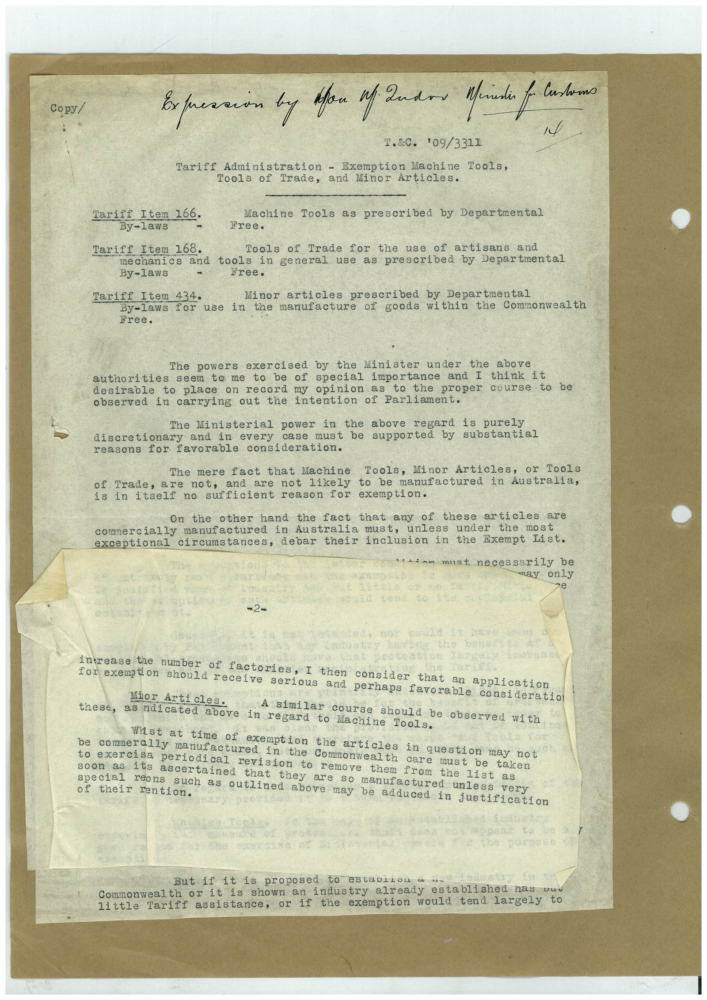

Book 1 · scan 095


Description
Transcription
Context
Review notes
Compare the machine draft with the scan. Handwriting and names need human review.
Artifacts
Edit the artifacts field in this note’s frontmatter to change these records. This summary is generated.
B01-S095-A01 — Typed document — Book 1, scan 095
Types: Typed document
Scope: Whole scanned page; individual items can be split out during review.
Caption: Not mapped yet.
Caption source: Not recorded yet.
Caption status: unmapped
Machine transcription
Copy/ Expression by fan if Indon Mride f - Customa T.&C. "09/3311 Tariff Administration - Exemption Machine Tools, Tools of Trade, and Minor Articles. Tariff Item 166. Machine Tools as prescribed by Departmental By-laws Free. Tariff Item 168. Tools of Trade for the use of artisans and mechanics and tools in general use as prescribed by Departmental By -laws Free. Tariff Item 434. Minor articles prescribed by Departmental By-laws for use in the manufacture of goods within the Commonwealth The powers exercised by the Minister under the above authorities seem to me to be of special importance and I think it desirable to place on record my opinion as to the proper course to be observed in carrying out the intention of Parliament. The Ministerial power in the above regard is purely discretionary and in every case must be supported by substantial reasons for favorable consideration. The mere fact that Machine Tools, Minor Articles, or Tools of Trade, are not, and are not likely to be manufactured in Australia, is in itself no sufficient reason for exemption. On the other hand the fact that any of these articles are cormercially manufactured in Australia must, unless under the most exceptional circumstances, debar their inclusion in the Exempt list. 1imn must. necessarily be may only -2- intrease the number of factories, I then consider that an application for exemption should receive serious and perhaps favorable consideratio Mior Articles. A similar course should be observed with these, as ndicated above in regard to Machine Tools. Whst at time of exemption the articles in question may not be commerally manufactured in the Commonwealth care must be taken to exercisa periodical revision to remove them from the list as soon as its ascertained that they are so manufactured unless very special reons such as outlined above may be adduced in justification of their rention. But if it is proposed to estauriou a "- Commonwealth or it is shown an industry already established has vuu little Tariff assistance, or if the exemption would tend largely to